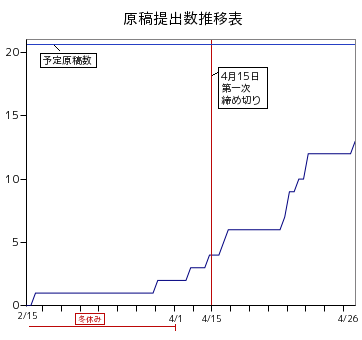
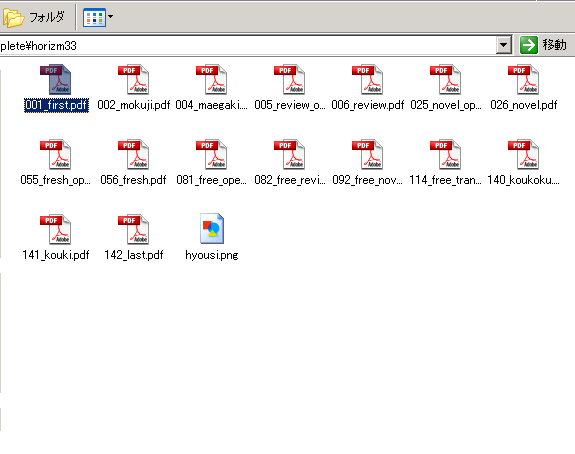
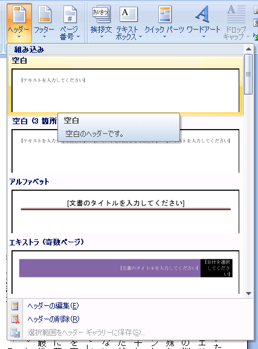
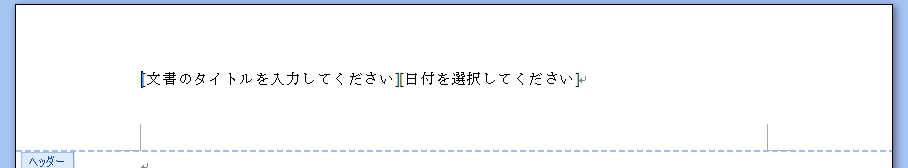
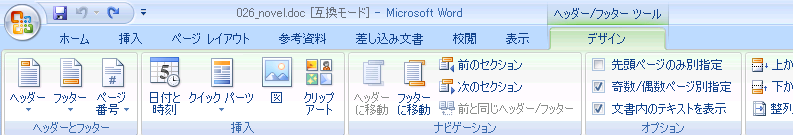
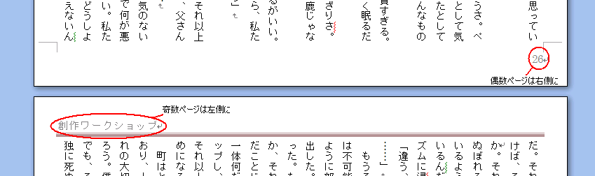
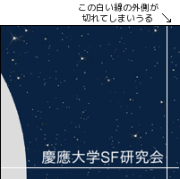
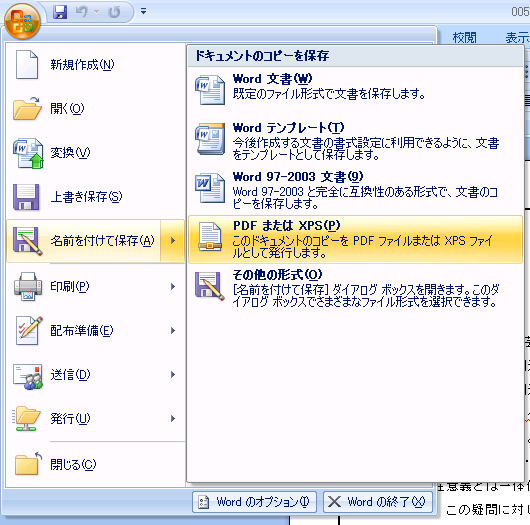

本稿はホライズムの作り方をまとめたものだ。これが唯一の作り方というわけではないので、自由にやってほしい。
全体図
あなたがホライズムであれ他の会誌であれ、その編集長に選ばれたなら、たとえ1年生であったとしても、あなたはその会誌に関しては最高決定者であり、部長であろうがあなたの決定を覆すことはできない。以上。
LaTeX
Microsoft Office Word 2007
企画を決めて、各人に原稿を割り振り、書いたものを自分のメールアドレスに送ってくれるように頼めばいい。
おそらく、書評・小説が中心となると思う。
募集する原稿の長さの目安に、ホライズム33の原稿の統計をあげておく(ちなみにどちらも2000字以上で募集した)。
企画書評: 平均 3,206字, 最大 4,770字, 最小 1,989字
企画創作: 平均 6,426字, 最大 15,574字, 最小 2,123字
要するに、人によって書ける分量はかなり変わるわけ。特に小説。
好きに割り振ってほしい。ただ注意しておくと、ここで人は3種類にわかれる。
厄介なのは3のグループだ。彼らは大抵の場合、催促すれば書くというが、原稿はいつまで経ってもやってこない。しかも、最後には連絡がつかなくなったりする。なので、早めに切って誰かに再配分するか、あるいは最初から原稿を振らないこと。去年は小説・書評あわせて21個他の人に割り振ったが、そのうち最初に割り振られた人が書かなかったのが9個ある。全体のほぼ4割だ。

この図から分かること: みんな締め切りギリギリになるまで書かない。だから早めに締め切りを設定して、皆をせっつけ！
なぜか送ってくる原稿には山のように誤字やタイプミスがあるので、がんばって直してくれ！
去年は、誤字や内容の誤りを除いて、以下のような文法的なチェックも施した。
置換をうまく使って処理するとよかろう。
全体の構成の基本は次だ(リンクは去年の例)。
ファイルは上の構成の各セグメントごとに作ること。Wordだと、1つのファイルの中のヘッダーやフッター(後述)を部分ごとにいじくれないからだ。その場合、ファイル名を単に「syousetu.doc」とかやらずに、「最初のページ数_終わりのページ数_名前.doc」といったように付けるとわかりやすい。

これは今回のファイル構成を示したもの。命名規則は「(最初のページ数(3ケタ))_(ファイル名)」とした。
今回は余白を上下左右12.7mmずつとったが、少しページの内側(綴じてある方)が詰まりすぎてしまったように思う。だから、内側はこれより5～6mmほど余計にあけた方がいい。また、本文のフォントはMSゴシックの10ポイントで作った。これらについてはホライズム33を見てくれれば、どういう感じになるのかつかめると思う。
ページ上段の見出し(「一年生特集」とか)や、下段のページ番号などはすべてヘッダーとフッターで作成できる。
まずはこいつをファイルに加えてみよう。「挿入」→「ヘッダー」(あるいは「フッター」)をクリック。それで、好きなデザインのものを選べばいい

たぶん、ここまで実際にやってみたらこう尋ねたくなるだろう: 「えっと、デザインってこれだけしかないの？」
そう、それだけしかない。マイクロソフト叔父さんは十何種類も用意してくれてるけど、愉快なことにさっぱり使えない(「エキストラ」？ 「タイル」？ なにこれ？)。ただ私はモノクロのラインが引いてあって、右上(偶数ページなら左上)に見出しがつけられればいいだけなのに、それすらできない。一番近いのは「アルファベット」だが、これは線の色が茶色だ。結局これを使ったが、おかげで印刷所でモノクロに印刷されたらどんな色が出るのか、完成品を見るまでわからないかった(幸いにうまく出てくれたが)。
線の色を変えたらいいだろうって？ それができないんだ。 どっかに他のデザインはないの？ マイクロソフト叔父さんはありがたくも、Microsoft Office Onlineと称するサイトでいろんな素材を公開してくれている。「ヘッダー」で検索してみよう。たった4件？ でもまあいい、「シンプルな線のデザイン」、良さそうなのがあった(線の色が青いのが気になるけど)。ダウンロードすると、突然「新しい文書パーツの探し方」と名乗るファイルが突然開いてくれる(しかも毎回)。そいつを閉じて、ヘッダーを挿入すると……やったー！入ったぞ。……あれ、どういうことだ、線がない。……ええと、もしかして「シンプル」って線が見えないってこと？

ここからわかるように、、このヘッダー/フッダーは編集作業の中でも最高にイライラさせられる部分だ。編集しようとすると間のラインが突然消えたり、あるいは増えたり、時に変な入力ボックスが消せずに残ったりする。正直、なぜマイクロソフトがこんな風にまずくヘッダー/フッターのシステムを作ったのか理解に苦しむ。だが、ここはひとまず置いておいて、役に立つテクニックを教えてしんぜよう。


表紙を書く時に、上下左右3～5mm余分にとっておくこと。印刷所の人が仕上げに本の端を切り落とすとき、端の方にある絵が切れてしまう可能性があるからだ。例えば、B5用紙のサイズは182mm×257mmだが、5mmずつ余分を取るなら、192mm×267mmの絵を用意することになる。

印刷所にはデータはpdfという形式で持っていく。やり方は、出来上がったファイルを開いて、「名前をつけて保存」→「PDFまたはXPS」でできる。

一度に変換する方法があったはずなのだが、どうも思い出せない。とりあえずこれでできるので、分らなかったらこれでやってみればいい。
これまで、ホライズムは日吉のコピントという店で印刷してもらっている。手順は次。
印刷自体は大体10日～2週間ぐらいで仕上がる。
{kind=link}
{kind=link}
{kind=link}